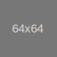

<div class="table-hover mb-3 bg-white bb-grupo">
    <table class="table">
        <thead>
            <tr>
                <th scope="col">#</th>
                <th scope="col" class="col-2 text-center">Equipo</th>
                <th scope="col" class="text-center">PJ</th>
                <th scope="col" class="text-center">PG</th>
                <th scope="col" class="text-center">PE</th>
                <th scope="col" class="text-center">PP</th>
                <th scope="col" class="text-center">GF</th>
                <th scope="col" class="text-center">GC</th>
                <th scope="col" class="text-center">DG</th>
                <th scope="col" class="text-center">Pts</th>
                <th *ngIf="mostrarPromedio" scope="col" class="text-center">Promedio</th>
            </tr>
        </thead>
        <tbody>
            <tr *ngFor="let equipo of datosEquipos; let i = index;" [ngClass]="{'table-success': (i == 12 && mostrarAscenso == true), 'table-danger': ((i == 13 || i == 14) && mostrarAscenso == true)}">
                <th scope="row">{{i + 1}}°</th>
                <td class="text-right">
                    {{equipo.nombre}} 
                </td>
                <td scope="row" class="text-center">{{equipo.partidos_jugados}}</td>
                <td scope="row" class="text-center">{{equipo.partidos_ganados}}</td>
                <td scope="row" class="text-center">{{equipo.partidos_empatados}}</td>
                <td scope="row" class="text-center">{{equipo.partidos_perdidos}}</td>
                <td scope="row" class="text-center">{{equipo.goles_favor}}</td>
                <td scope="row" class="text-center">{{equipo.goles_contra}}</td>
                <td scope="row" class="text-center">{{diferenciaGoles(equipo.goles_favor, equipo.goles_contra)}}</td>
                <td scope="row" class="text-center">{{equipo.puntos}}</td>
                <td *ngIf="mostrarPromedio" scope="row" class="text-center">{{calcularPromedio(equipo.partidos_jugados, equipo.puntos)}}</td>
            </tr>
        </tbody>
    </table>
</div>
